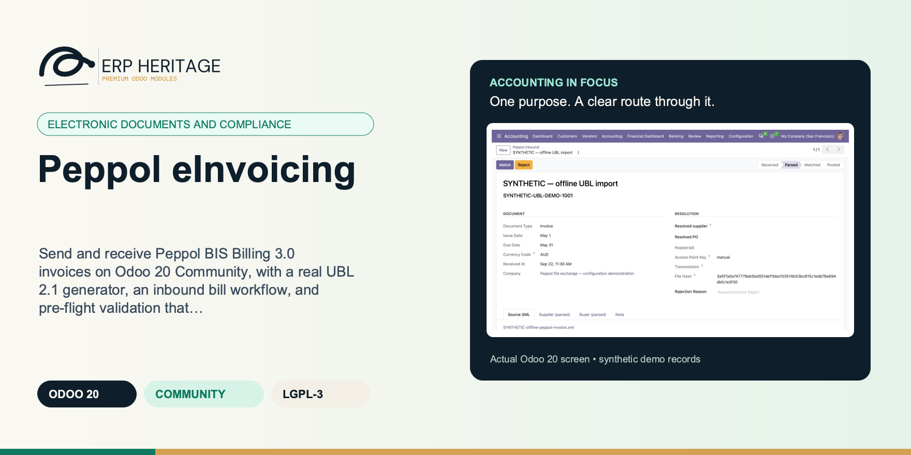
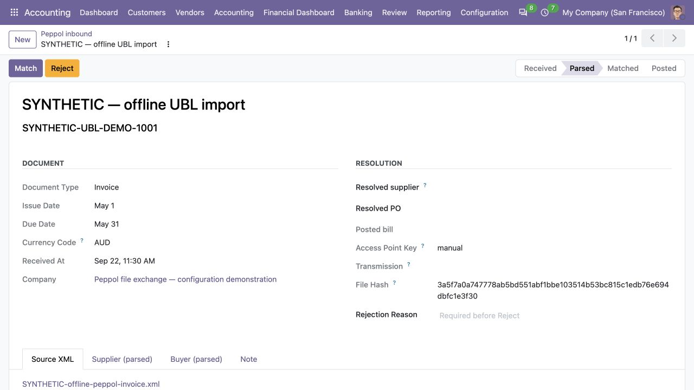
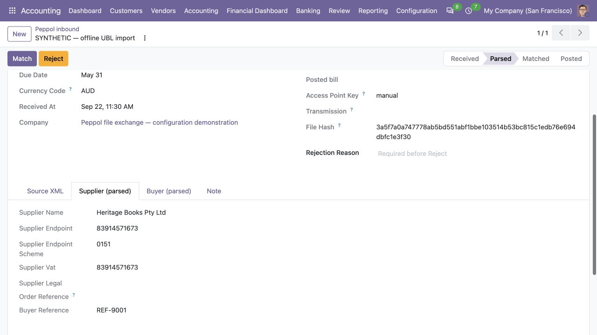
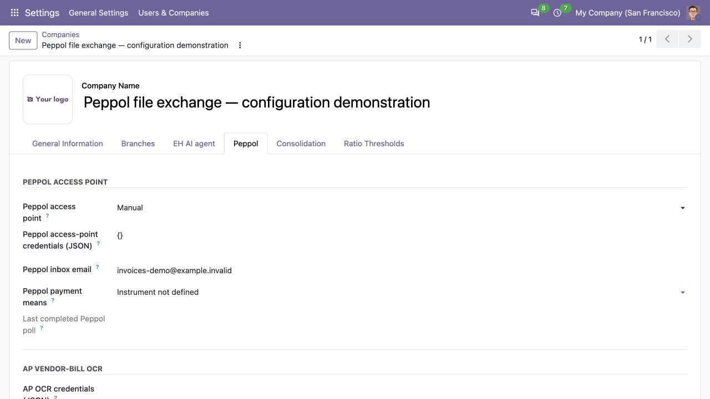

ERP HERITAGE / ODOO 20 COMMUNITY
Peppol eInvoicing
Send and receive Peppol BIS Billing 3.0 invoices on Odoo 20 Community, with a real UBL 2.1 generator, an inbound bill workflow, and pre-flight validation that catches errors before the access point does.
LGPL-3 · Odoo 20 · v20.0.1.9.0 · Module guide, setup, workflows and rollout checks
The purpose
Make the next finance decision clearer.
Peppol eInvoicing renders a posted journal entry into a Peppol BIS Billing 3.0 (UBL 2.1) Invoice or CreditNote XML, and ships the inbound side as well: a UBL parser and a bill-intake workflow that moves a received document through parsed, matched and posted to create the vendor bill.
Inside Odoo 20
See the accounting workflow.
Captured from Odoo 20 Community using synthetic demonstration records. Configuration screens show the available workflow; external service connectivity still requires the relevant provider setup and validation.

Parsed offline UBL invoice retains its synthetic source file, invoice reference, dates and currency; it has not been matched or posted.
Captured 2026-09-22 from isolated Odoo 20 Community after parsing the project’s synthetic UBL fixture through the actual manual-file inbound workflow. No Peppol network receipt, access-point request, transmission or certification is represented.

Supplier tab shows the identifiers and buyer reference parsed from the synthetic offline UBL file before vendor matching.
Captured 2026-09-22 from isolated Odoo 20 Community after parsing the project’s synthetic UBL fixture through the actual manual-file inbound workflow. No Peppol network receipt, access-point request, transmission or certification is represented.

Buyer tab shows the endpoint scheme and buyer identifiers parsed from the same offline fixture; no network validation is represented.
Captured 2026-09-22 from isolated Odoo 20 Community after parsing the project’s synthetic UBL fixture through the actual manual-file inbound workflow. No Peppol network receipt, access-point request, transmission or certification is represented.

Manual file-exchange company settings show the selected manual access point, empty credential configuration and demonstration inbox address.
Captured 2026-09-22 from isolated Odoo 20 Community with synthetic configuration. The example uses offline file exchange and cannot demonstrate a live Peppol connection.
Inside this module
Built around the work your team does.
A real generator and a real parser
Outbound emits the actual OASIS UBL 2.1 namespaces and the Invoice-2 and CreditNote-2 roots. Inbound is a parser plus a received to parsed to matched to posted state machine that creates the vendor bill. Not field names that sound like Peppol, the actual document mechanisms.
Caught before the access point
Every payload is checked against the high-frequency Peppol and EN 16931 invariants (mandatory elements, single currency, totals reconciled within 1 cent) before download, and a failure names the rule. Participant identifiers are checksum-validated so an invalid ABN or GLN bounces with a precise message, not a rejection hours later.
Yours to keep, yours to wire
LGPL-3 source on disk, no activation key, no phone-home. Transport is bring-your-own through a published adapter contract, and the journal entry payload builder is split into override methods so a localisation can enrich party identification and per-line tax mapping without forking the module.
CANONICAL OUTBOUND
Shared EN 16931 semantics supply legal buyer, net prices, stable unit codes, booked taxes, rounding, prepayment and payable totals. Peppol adds validated participant identifiers and transport evidence.
CURRENCY PROOF
Document-currency amounts must agree. A separately declared tax accounting currency is accepted only for its exact top-level TaxTotal; every other mixed-currency amount fails pre-flight.
INBOUND CONTROL
Inbound bills remain manager-gated. Polling parses but never auto-posts; ambiguous suppliers and unsupported financial adjustments route to explicit exceptions.
IMMUTABLE EVIDENCE
Exact submitted UBL bytes, digest, endpoint identity and status are pinned before transport. Duplicate business documents and ambiguous transport outcomes fail closed.
Outbound UBL 2.1 generator
One button on a posted customer invoice or credit note renders a Peppol BIS Billing 3.0 document using the official OASIS UBL 2.1 namespaces and Invoice-2 / CreditNote-2 roots, with UN/ECE rec-20 unit codes in the unitCode attribute.
From input to outcome
Follow the complete workflow.
Prepare the business inputs
Check company and partner identifiers and select the access-point integration that the deployment will use. Gather invoice data, legal-party identifiers, taxes, UBL documents, access-point adapter and credentials. Use a representative case with a known expected result so the team can separate configuration decisions from unexpected behaviour. Keep the supporting commercial or accounting evidence available during review.
Run the supported operation
Generate and validate an outbound document or parse an inbound invoice, inspecting the resulting financial data and workflow status. Follow the record’s available actions in the order intended by the workflow. Review the selected company, relevant dates and any validation messages before continuing. If the source data changes, reassess the result against the updated evidence.
Worked operating scenario
A posted customer invoice gets one button: the generator produces the BIS Billing 3.0 XML, structurally validated for mandatory elements, single-currency consistency and total reconciliation before it is offered for download. Later the same day a supplier UBL arrives in the inbox. The poll cron parses it into header data but does not post anything. The clerk opens the record, the parser has already matched the supplier, and an accounting manager posts it as a vendor bill. When the access point retransmits the same file an hour later, the duplicate guard recognises the file hash and refuses it, so no second bill is created. None of it required an Enterprise subscription.
Review the result in context
Review validation failures and adapter responses before treating a document as delivered or an inbound draft as an accepted bill. Compare the outcome with the expected treatment for this case and record the reason for any difference that requires follow-up. Give exceptions an owner so they do not disappear inside a period-end spreadsheet.
Make the process repeatable
Assign credential and access-point support ownership; a document generator does not by itself provide a commercial network subscription. Include the accepted operating example, configuration choices and unresolved dependencies in the handover. Review them when business policy, source data or the surrounding Odoo applications change.
Business situations
Where this module fits.
Focused operational adoption
Peppol eInvoicing is relevant to e-invoicing administrators and accounts payable or receivable teams who need to answer this question: Can invoice semantics be transformed into a Peppol document and handled through a configured access-point connection? Start with the process that creates the decision, identify its owner and agree what evidence the reviewer needs. A narrow pilot helps the team evaluate the supported workflow using its own accounting data before broadening access.
A reviewed period-end handover
Use the module’s electronic documents and compliance role as one part of a controlled close. Bring the relevant invoice data, legal-party identifiers, taxes, UBL documents, access-point adapter and credentials to the review, then explain the result alongside the business event it represents. Establish which outputs become part of the reporting pack and which outstanding matters need a separate accounting decision.
A clear implementation acceptance case
Turn the business question into an acceptance case: Can invoice semantics be transformed into a Peppol document and handled through a configured access-point connection? Use one ordinary example and one relevant exception from the supported scope below. Ask the intended operator to prepare it and the reviewer to explain the result. Retain that accepted example with the deployment notes so future changes can be assessed against an understood process.
Before the first result
Prepare a clean, reviewable starting point.
Agree scope before configuration
Confirm that the organisation needs the supported electronic documents and compliance process described here. Identify the responsible e-invoicing administrators and accounts payable or receivable teams and write down the decision they expect the module to support. Use the limitations section to separate shipped behaviour from an integration, professional judgement or operational service that needs another owner.
Bring the required data
Prepare invoice data, legal-party identifiers, taxes, UBL documents, access-point adapter and credentials. Check the relevant records in the intended company and use dates that match the business event. Resolve missing accounting configuration before evaluating calculated output; plausible-looking totals do not establish that the chosen inputs or policies are correct.
Check the installed foundations
This module declares Accounting Suite Base, EH EDI Core as part of its installation foundation. Its direct standard-Odoo dependencies are account, purchase. Review the actual dependency set in the target database before a rollout, especially where another addon also extends the same accounting models, menus or posting actions.
Set up an owned review routine
Define who operates Peppol eInvoicing, who reviews unusual results and who maintains configuration. Run the representative workflow below in a test database using the intended users. Confirm that users can reach the work they own and that the reviewer understands the available evidence before moving the process into live operation.
Workflow reference
Understand the records and controls.
Capability detail 1
Outbound is one button on a posted customer invoice or credit note. The generator emits the official OASIS UBL 2.1 namespaces (cbc CommonBasicComponents, cac CommonAggregateComponents, the Invoice-2 and CreditNote-2 roots) and carries UN/ECE rec-20 unit codes in the unitCode attribute. Before the payload is returned, it is checked against the high-frequency Peppol and EN 16931 invariants: mandatory elements present, a single document currency used consistently, and line totals and tax totals that reconcile within 1 cent. A failure names the offending rule instead of bouncing later at the access point. This is a structural pre-flight check, not full XSD schema validation.
Capability detail 2
Inbound is a real state machine. A received UBL document is parsed into header data, matched to a supplier, and only then posted as a vendor bill, with posting gated to accounting managers. An identical re-submission (same file hash, same supplier, same company) is detected and refused, so a poll that retries cannot create a duplicate bill. Where supplier resolution is ambiguous, the record is routed to an exception state for human review rather than guessing.
Capability detail 3
Country-profile validators for A-NZ, MY, DE and FR ship in tools as opt-in, unit-tested checks. They validate jurisdiction identifiers (ABN/NZBN, MY TIN, DE VAT and Leitweg-ID, FR VAT and SIRET) and allowed tax categories against the BIS 3.0 payload. They do not generate the MyInvois, XRechnung or Factur-X national formats, and they are not run by the default Export button.
Capability detail 4
Transport is bring-your-own. A real adapter registry and contract (submit and poll) ships in-module with a manual file-drop stub. Live AS4 transmission requires a separate ERP Heritage access-point adapter registered under the same key, which is not included here. The access-point key and inbox email are stored per company and read by the inbound poll cron, so a multi-company install can route each company to its own access point. LGPL-3 source on disk, no activation key, no phone-home.
Structural pre-flight validation
Before download, the payload is checked against the high-frequency Peppol and EN 16931 invariants: mandatory elements, single-currency consistency, and line and tax reconciliation within 1 cent. A failure names the offending rule. This is a structural check, not full XSD validation.
Inbound parser and bill workflow
A complete UBL parser feeds a received to parsed to matched to posted to exception state machine that creates the vendor bill, with posting gated to accounting managers and ambiguous suppliers routed to exception for review.
Participant-identifier validation
Real checksums validate participant identifiers before export: ABN weighted checksum, GS1 GLN mod-10, fixed-length numeric schemes, DE VAT, FR SIRET Luhn and MY TIN, so an invalid id bounces with a precise message instead of failing at the access point.
Country-profile validators (opt-in)
A-NZ, MY, DE and FR validators ship in tools as unit-tested, opt-in checks for jurisdiction identifiers and allowed tax categories against the BIS 3.0 payload. They do not generate national formats and are not run by the default Export button.
Bring-your-own access point
An adapter registry and submit/poll contract ships in-module with a manual file-drop stub. The access-point key and inbox email are stored per company and read by the poll cron, so each company in a multi-company install can route to its own access point. Live AS4 transport is a separate adapter, not included.
Localisation override hooks
The journal entry payload builder is split into override methods for payload, party, and lines plus tax, so a localisation can enrich party identification and per-line tax mapping by inheritance.
Eh peppol ready
True when the partner has both a Peppol endpoint id and a scheme set. Surfaces on the move form so the operator knows whether they can press Export Peppol.
Peppol endpoint scheme
OpenPeppol scheme id for the endpoint. Examples: '0192' Norway organisation number, '0088' GLN, '0151' Australian Business Number, '9930' German VAT-id.
EN 16931 tax category
UNTDID 5305 tax category emitted on e-invoices for lines that use this tax. Leave blank to derive it from the rate (zero rate -> Z, otherwise S). Set it explicitly to distinguish exempt (E), reverse charge (AE), export (G) or out of scope (O) supplies, which a rate alone cannot tell apart.
EN 16931 exemption reason
Human readable reason why no tax is charged. Required by EN 16931 for exempt (E), reverse charge (AE), export (G) and out of scope (O) categories. Emitted as TaxExemptionReason in the tax breakdown.
Access point key
Adapter key under which the inbound XML arrived (e.g. 'storecove', 'pagero', 'manual'). Identifies which transport channel the message took; surfaces in the audit trail. Adapter must be registered via the access point registry before the value will roundtrip into a real submit/poll call.
Transmission
Access-point transmission id, when one is supplied. Used for cross-reference against the access-point's delivery receipts and the MLR (message level response) queue.
File hash
SHA-256 hex digest of the source XML. Used for the duplicate-detection check; a re-submission with the same hash from the same supplier in the same company refuses to post twice.
Order reference
Purchase-order reference carried in the source UBL, when present. Used to look up purchase order for the three-way match in the AP automation module.
Resolved supplier
Vendor record matched from the inbound supplier block. Resolution order: VAT/ABN, Peppol endpoint id, name + country. Strict: ambiguous matches leave the field empty for manual selection.
Duplicate inbound
Set when another inbound record exists for the same supplier and invoice number in the same company (or, before the supplier is resolved, the same raw-XML hash). The business-identity key catches a redelivery that re-serialised the UBL, which a raw-bytes hash would miss.
Duplicate move
Set when a vendor bill for the same supplier and reference is already posted in this company (via AP intake, manual entry, or an earlier inbound post). Blocks posting a second payable. Duplicate evidence is server-owned; the duplicate delivery must be rejected or the original posting must be legitimately reversed before review is repeated.
Peppol access point
Identifier of the access-point adapter the company uses for inbound poll and outbound submit. Defaults to 'manual', which means the deployment routes XML by file drop / email / portal upload. Set this to one of the registered adapter keys to enable live AS4 transport (install the corresponding ERP Heritage adapter module first).
Peppol inbox email
Optional alias the access point forwards inbound XML to. Sites that use email-as-transport (rather than direct API delivery) configure this and route the alias to a mail-fetcher that creates Inbound Peppol invoice records.
Peppol payment means
PaymentMeansCode rendered on outbound UBL. Credit-transfer codes 30 and 58 require a payee bank account on the invoice; code 1 records that no more specific instrument is evidenced.
Last completed Peppol poll
Server-owned lower bound for inbound access-point polling. It advances only after every returned message is persisted; failed or partial batches retry from the prior cursor.
Prepare an invoice before live transport
Illustrative implementation exercise. A posted customer invoice is ready for Peppol document generation. Review the legal parties, endpoint identifiers, tax categories and monetary totals before producing the UBL. Inspect the pre-flight validation outcome and understand its structural scope. A generated file and a successful local validation are not proof that an access point has delivered it. Use the manual file workflow or the separately installed live adapter appropriate to the deployment. For inbound work, inspect the supplier match and duplicate evidence before accepting the vendor bill. Include an ambiguous supplier or inconsistent-total example in testing so accounts payable knows what requires intervention and where delivery evidence is recorded.
Questions before rollout
Answers your finance team needs.
Who is this module designed for?
It is designed for e-invoicing administrators and accounts payable or receivable teams. Its central business question is: Can invoice semantics be transformed into a Peppol document and handled through a configured access-point connection? The listing describes the shipped operating scope and the decisions that remain with the organisation. Evaluate it against your own records and review process, rather than treating the module name as a promise to cover every scenario in that accounting area.
What should be ready before the first run?
Have invoice data, legal-party identifiers, taxes, UBL documents, access-point adapter and credentials ready, together with the person who owns the related accounting policy. Check company and partner identifiers and select the access-point integration that the deployment will use. A known example makes it possible to check the result and resolve configuration questions before the process is repeated across more records or companies.
What should a reviewer inspect?
Review validation failures and adapter responses before treating a document as delivered or an inbound draft as an accepted bill. Keep the relevant source evidence with the output and be explicit about company, date and policy choices. The most useful review asks whether the result follows from the business inputs, not only whether the operation completed without a validation message.
How does this fit into the accounting suite?
It belongs to the electronic documents and compliance family. Its declared custom dependency foundation is Accounting Suite Base, EH EDI Core. Installing the complete suite also brings other operating and specialist modules; using this focused module should be evaluated against its own dependency list and scope. Optional services still need their own configuration and agreement where applicable.
What is the most important scope boundary?
No live AS4 transmission is included. A real adapter registry, submit/poll contract and a manual file-drop stub ship in-module, but live access-point transport requires a separate ERP Heritage adapter module registered under the same key. Assign credential and access-point support ownership; a document generator does not by itself provide a commercial network subscription.
Does installing it validate our accounting policy?
No. Peppol eInvoicing provides the specific records, calculations or workflow described in this listing. The organisation remains responsible for its source information, accounting choices, supporting evidence and review. Where the process uses an estimate, a contract assessment or an external service, appoint the appropriate owner before relying on the output.
Scope and requirements
Know exactly what you are installing.
No live AS4 transmission is included. A real adapter registry, submit/poll contract and a manual file-drop stub ship in-module, but live access-point transport requires a separate ERP Heritage adapter module registered under the same key.
Validation is structural, not full XSD. The pre-flight checker enforces the high-frequency Peppol and EN 16931 invariants (mandatory elements, single currency, total reconciliation), not the complete OASIS XSD schema; no .xsd files ship.
The four country profiles validate, they do not generate national formats. A-NZ, MY, DE and FR validators check identifiers and tax categories only; they do not emit MyInvois submissions, XRechnung CII or Factur-X documents, and they are opt-in rather than run by the Export button.
No dedicated Settings panel ships. Configuration lives on records: the Peppol endpoint id and scheme are set per partner, and the access-point key per company. There is no accounting settings view or top-level menu in this module.
The low-level UBL renderers are pure functions, not inheritance override points. Override seams exist on the journal entry side (payload, party, lines plus tax); the renderers in tools are module-level functions and cannot be overridden via Odoo inheritance.
Standards references describe the accounting subject addressed by the module. They do not establish certification, statutory filing acceptance or suitability for every jurisdiction. Your finance team owns its assumptions, accounting policies and review.
Installation scope
Included dependencies, explained.
Odoo installs the following direct dependencies automatically. Additional dependencies can be brought in by those modules. Related modules in the wider catalogue are optional unless they appear in this dependency chain.
Accounting Suite Base
Shared reporting engine for the ERP Heritage Odoo 20 Community accounting suite, providing a reproducible report-execution audit log and a move-version result cache. Append-only audit log of every report render with user, timestamp, the full options snapshot, runtime, and a SHA-256 result hash for XLSX and PDF output, plus a multi-company analytic-aware parameterised SQL builder with no raw user input in SQL, a three-tier User/Manager/read-only Auditor privilege model, and a currency-aware XLSX writer. Odoo 20 Community accounting reporting engine, reproducible financial report audit trail, move-version report cache invalidation, multi-company parameterised SQL builder, append-only audit log, read-only auditor role, SHA-256 report hash compliance, currency-aware XLSX export, analytic-aware journal item aggregation.
Included dependency: eh_account_base. The shared reporting engine under the ERP Heritage accounting modules: an append-only render audit log, precise per-company cache invalidation, and a whitelist-only parameterised SQL builder.
EH EDI Core
Canonical EN 16931 invoice semantics and versioned AES-256-GCM credential storage for ERP Heritage e-invoicing modules.
Included dependency: eh_edi_core. Versioned credential encryption and canonical EN 16931 financial semantics shared by participating ERP Heritage e-invoicing modules.
Account
Odoo Community dependency required by this module. Its own dependencies and configuration remain part of the installation scope.
Purchase
Odoo Community dependency required by this module. Its own dependencies and configuration remain part of the installation scope.
Acceptance guide
Run a pilot your team can trust.
The following are recommended rollout checks, not claims of additional built-in features. Apply the checks relevant to this module and retain evidence of your own results.
Start with one complete business cycle
Select a recent, closed period that your finance team understands well. Keep its approved source documents, ledger totals and existing working papers available. Reproduce that period in a staging database before working on current transactions. A familiar period makes differences visible: you can distinguish an opening balance problem from a configuration choice, a timing difference or a genuine defect. Agree which person owns each discrepancy and what evidence will close it. Successful installation is the starting point; a repeatable business outcome is the acceptance criterion.
Define the result before choosing settings
Write down the output your team needs from this module: a reviewed transaction, an exported file, a reconciled balance, an approved schedule or an operational queue. Identify who prepares it, who reviews it and who relies on it next. Make the scope concrete with one company, one reporting period and a small representative document set. Include an ordinary case and an exception. This keeps the evaluation focused on the business decision instead of the number of available screens, and gives reviewers a consistent way to compare the new workflow with their current process.
Check the edition and dependency boundary
Use the Odoo 20 edition of the module and its dependencies together. The manifest defines what Odoo installs automatically; a feature mentioned elsewhere in the wider product family is not automatically included. Review the dependency guide on this page before enabling the complete suite, especially where your deployment also uses Sales, Purchase, Inventory or website components. Confirm that your hosting arrangement accepts custom server modules and their Python requirements. Keep a copy of the installed module versions with your acceptance record so a later update can be checked against the same baseline.
Prepare master data with finance owners
Check the companies, currencies, fiscal periods, journals, accounts and partner records used by your sample. Confirm that account purposes agree with your chart of accounts and that archived records are not being selected inadvertently. Review company-specific settings while the intended company is active. Where a workflow needs bank details, analytic dimensions, product information or payment terms, validate those inputs with their owner. Clean master data reduces repeated exceptions and makes it easier to investigate the exceptions that remain. Keep the preparation list short enough for someone else to repeat it.
Keep opening balances traceable
Decide which source establishes the opening position before introducing new transactions. Save the source date, company, currency and supporting reconciliation. If a module maintains a schedule or a working-paper balance alongside the ledger, document how that opening amount should tie to the general ledger. Do not use balancing entries to hide a difference during the pilot. Classify the difference, correct its source and rerun the comparison. The resulting trail is useful both for your internal reviewer and for support if an unexpected calculation needs investigation.
Assign preparation and review deliberately
Choose named users for preparation, review and administration. Confirm their practical access by signing in as those users in staging, rather than relying on an administrator's view of the menus. A visible menu does not replace model access or record restrictions, and a hidden menu does not by itself prove that data is protected. For your own acceptance check, verify the specific business operations each role needs. If your organization requires separation of duties, include that policy in the rollout criteria and check the actual workflow against it before granting production access.
Exercise company boundaries
Run the sample with the intended company selected, then repeat the relevant navigation and search checks as a user assigned to a different company. Record which company owns each source document and each generated result. For users who work across entities, confirm how their allowed-company selection affects totals and available records. Investigate any cross-company difference before it becomes a month-end problem. Group-level work and company-level work have different scopes; use the appropriate module and document the scope on the review evidence instead of assuming one screen represents both.
Use representative currencies and dates
Include a company-currency case and, where relevant to the module, a foreign-currency case. Check the date used to select exchange rates and keep the rate source available to the reviewer. Add a transaction near a period boundary so the team can see whether document date, accounting date or another business date drives the result. Test decimal precision with a small amount as well as a large one. Record the expected rounding treatment. These checks turn vague differences in totals into questions that can be resolved against your accounting policy.
Trace one result back to its source
Choose one result and follow the available links or record references back to the original business document. Compare its company, partner, amount, currency and dates with the expected source. Where the workflow creates a journal entry, inspect the accounts and balancing lines before relying on an aggregate report. Where it exports a file, compare the file's records with the selected batch. Save a small, intelligible evidence set instead of an indiscriminate screenshot archive. A reviewer should be able to explain what happened without needing the original preparer beside them.
Treat posting as a controlled milestone
If this module creates or updates accounting entries, separate preparation from the decision to post in your operating procedure. Inspect the proposed outcome, resolve missing configuration and confirm the intended period before using a posting action. If the module does not post entries, identify the equivalent commitment point, such as sending a file or approving a review record. Record who is allowed to make that decision. The page describes the module's supported workflow; your team still needs an operating policy that fits its accounting responsibilities and approval structure.
From pilot to production
Make the workflow repeatable.
Test correction, not only success
Use a deliberately incomplete sample in staging: a missing required setting, an unsuitable date or a source document that is not ready for the next step. Observe the actual message and the record state that remains. Correct the input and repeat the operation. Check that the recovered result agrees with the ordinary successful case. For transactions already committed, use the supported correction or reversal workflow rather than editing database records. Your acceptance record should explain how staff recover from mistakes, because that is part of day-to-day usability, not an unusual administrative task.
Check repeated actions with a small sample
Repeat an import, calculation, preparation step or button action only where the documented workflow permits it. Confirm whether the expected behavior is a recalculation, a refusal, a new version or reuse of an existing record. Do not infer universal duplicate prevention from one successful test. Record the behavior of the actual operation your team will use and include it in staff guidance. A small, identifiable sample makes duplicate records easy to spot and avoids creating a misleading acceptance result from a large batch with poorly understood contents.
Review period locks before the first close
Where accounting dates are involved, inspect your company's lock settings and the role that can change them. Include one sample dated inside a closed period and one in the open period, then observe the supported behavior with normal finance access. Agree how the team will handle late documents and approved corrections. The goal is a clear route for legitimate work that preserves the reason the period was closed. Record the policy alongside the module's workflow so operators know when to stop and involve the person responsible for the close.
Validate exports with their recipient
If the module produces reports or exchange files, have the intended recipient inspect a sample. For a finance report, check the filters, company, dates, currency, labels and totals. For a bank or service file, use that recipient's own validation or test process before a production submission. Generating a structurally valid file does not establish acceptance by every provider. Keep the exact sample and any recipient feedback with the rollout record. Where no export is provided, agree which supported screen or linked record serves as the handover evidence.
Separate optional services from core work
Identify any step that depends on a separately configured provider, connector, credential or commercial service. Confirm the exact adapter and its requirements before scheduling a live demonstration. Some family modules provide deterministic rules or file preparation without a live external connection; their usefulness should be evaluated on that basis. Test a provider failure in staging only when the adapter offers a safe test route. Make it clear who manages credentials and provider subscriptions, and who should be contacted when an external service is unavailable.
Measure a realistic working session
Time the operations your staff will actually repeat, using a dataset that resembles your expected company, date range and document volume. Record the environment and sample size beside the timings. Include navigation, filtering, preparation and review rather than quoting a single best-case page load. This page makes no universal performance promise: network latency, database size, customizations and infrastructure affect results. Use measurements to choose a practical rollout batch size and to identify any operation that needs investigation before more users join the workflow.
Train through examples with expected outcomes
Give staff a short exercise that begins with a business situation and ends with a reviewed result. Include the expected amount or state, the navigation route, the point at which a reviewer becomes involved and the supported correction route. Let operators explain why their result is correct. Add only the settings and exceptions relevant to their role. A concise internal playbook built from your own pilot is easier to maintain than a large collection of unannotated screenshots, and it helps new users understand the relationship between this module and the rest of Accounting.
Make support requests reproducible
Capture the module version, Odoo version, affected company, operation, exact message and a minimal sequence of steps. Use redacted sample documents when sharing evidence outside your organization. State the expected result and the actual result separately. Include the date filters and role used, because the same record can look different with another scope or set of permissions. Never include passwords, API tokens or private keys in a support message. Good reproduction details allow the problem to be investigated without guessing at your business setup or asking staff to repeat a full close.
Rehearse an upgrade on a copy
Before deploying an update, back up the database and filestore together, and restore that backup into an isolated environment. Apply the module update there, then repeat the key pilot scenarios using the saved acceptance record. Check that existing documents remain readable and that the expected actions and menus still lead to the right workflow. Include one newly created record as well as an older one. Keep a rollback plan appropriate to your deployment and confirm that the backup can be restored before scheduling the production change.
Define a small release decision
Agree the release criteria before the pilot ends: expected financial results, access boundaries, supported corrections, output acceptance and owner sign-off. List unresolved items with their business impact instead of treating every observation as a blocker or dismissing it as cosmetic. Start production with a manageable scope and a named reviewer. Keep the first cycle's evidence so that later enhancements can be assessed against a concrete baseline. App-store descriptions help you select and understand the module; acceptance in your own configuration establishes whether the workflow is ready for your team.
Connected capabilities
Choose the next capability with context.
These related modules explain how this workflow connects to the wider accounting process. Only the dependencies declared above are installed automatically. Choose optional additions for a specific business need.
Accounting Suite Base
The shared engine that powers the ERP Heritage accounting modules for Odoo 20 Community. It auto-installs as a dependency of any ERP Heritage accounting module, so you do not need to install it by hand.
AU BAS Reporting
Australian BAS is an optional country app built on the ERP Heritage accounting suite. Installing this app installs the global suite and adds the Australian reporting workflow. Installing the global suite alone does not install BAS. The Business Activity Statement is the quarterly tax report Australian businesses lodge with the ATO. This module produces the figures the operator transfers onto the form and keeps a frozen, auditable record of each lodgement, on Odoo 20 Community.
EH EDI Core
Internal technical dependency for the ERP Heritage e-invoicing modules (Mauritius MRA, France PDP / PPF Factur-X, Peppol BIS Billing). It gives the e-invoicing line two shared foundations so each format module stays small, consistent, and audited in one place.
Odoo 20 Community Accounting Pro
ERP Heritage Community Accounting Pro installs a fixed collection of 50 direct accounting dependencies. Together with the suite itself and the transitive EH EDI Core foundation, its custom-module closure contains 52 modules. The collection brings reporting, reconciliation, payments, receivables, approvals, specialist accounting, group work and close controls into one Community installation. Its value comes from connecting those processes and their evidence; adoption still requires deliberate company configuration, accounting ownership and review. Australian BAS is available separately and installs the suite as its accounting foundation.
Plan the surrounding workflow
Companion playbooks, with scope made explicit.
The following playbooks explain adjacent work in named companion modules. They are included here to help you plan the handoff around this module. Each companion is labelled as an installed dependency or an optional addition. These capabilities belong to that named companion, not to the standalone module you are reading about.
Included through this module’s dependency chain
EH EDI Core
Versioned credential encryption and canonical EN 16931 financial semantics shared by participating ERP Heritage e-invoicing modules.
Crypto and common mapping, written once
Credential encryption and common EN 16931 financial semantics live in one audited dependency. Participating format modules reuse them and add only their jurisdiction or transport evidence.
Authenticated encryption with key identity
AES-256-GCM ciphertext carries a format version and key id. Historic keyrings preserve existing data while controlled rotation re-encrypts it under the current key.
One financial model, format-specific evidence
Shared adapters carry legal parties, net prices, stable unit codes, booked taxes, totals, and references. Peppol and Factur-X consumers retain their own profile identifiers and serialization rules.
KEY ROTATION
Key identity is authenticated inside ciphertext. Unknown versions and missing historic keys fail closed; controlled rotation preserves associated-data binding.
TAMPER DETECTION
Tampered, truncated, wrong-key, or non-base64 ciphertext raises a vault error instead of returning corrupt plaintext.
CROSS-VERSION LINES
Product invoice lines are mapped; section and note rows are excluded. Legacy rows without a display marker are supported.
MONETARY PROOF
Discounted and tax-included prices tie BT-146 to posted line net; booked tax buckets and monetary identities fail closed on unexplained drift.
Versioned AES-256-GCM credential vault
New ciphertext records a format version and key id; legacy ciphertext remains readable, historic keyrings support rotation, and unresolved keys fail closed.
Review this companion’s own setup and scope before connecting the workflows. Keep the company, reporting date and business document references consistent at the handoff.
Optional companion; requires separate installation
Vendor Bill Automation
Intake every vendor bill, run a genuine three-way match against the PO and goods receipt, and let a manager post the clean ones in one batch.
A real three-way match
Not field names that sound like a match. Each line is matched to its PO line, the received quantity is read from done stock moves, and price is compared in the bill currency after FX conversion. Over-receipt is flagged distinctly from a quantity mismatch.
Posting stays with a human
Matched-within-tolerance intakes are flagged ready to post; an accounting manager posts them, alone or as a selected batch, in one action. Posting is never automatic, and it re-checks duplicates at post time.
Yours to keep
LGPL-3 source on disk. The shipped regex parser makes no remote calls. The extractor interface is pluggable, so a partner OCR or line extractor can register without forking the suite. Free today, free at renewal, because there is no renewal.
FX . MULTI-CURRENCY
A bill raised in a different currency than the PO does not flag every line as a price exception. The PO unit price is converted into the bill currency at the bill date before the price-tolerance check runs.
TOLERANCE
A price line is only flagged when both the per-unit percent tolerance and the absolute line-amount tolerance are breached, so a trivial penny mismatch never blocks an otherwise clean bill from posting.
RECEIVING
Invoiced quantity that exceeds the ordered PO quantity beyond the over-receipt percent is flagged distinctly as over-received, separate from a quantity-versus-received shortfall, so the two cases are never conflated.
DUPLICATES
A duplicate block can only be cleared by an accounting manager with a written reason, the override is posted to chatter, and posting re-runs the duplicate check at post time, not only at match time.
EMAIL SAFETY
When more than one partner matches the sender address, the intake is created with no vendor rather than guessing, because a wrong vendor attribution on a bill is higher risk than the convenience of an auto-fill.
Review this companion’s own setup and scope before connecting the workflows. Keep the company, reporting date and business document references consistent at the handoff.
Optional companion; requires separate installation
Approval Workflow
Block journal entry posting until every required approver in an amount-banded, ordered chain has signed off.
Posting is the enforcement point
The gate sits on the journal entry post pipeline, before sequence numbering and reconciliation fire. Until the chain reaches approved, the move cannot post, and the block names the exact policy, pending group, and step that stopped it. No half-posted, gap-numbered moves slip through.
Concurrency and audit, not just a status field
Two approvers clicking at once cannot both advance a step: an atomic compare-and-set with a stale-step guard lets one win and hands the other a clean retry. Every transition lands on an append-only log whose fields are immutable and whose deletion is refused at the model level.
A tested SLA engine, not a checkbox
Per-rule SLA hours compute a due time and an on-track, at-risk, or breached state. An hourly cron posts chatter and queues the shipped email reminder and escalates a breached request exactly once to a configured group, with per-record database savepoints and error isolation so one bad rule cannot stall the batch. The full lifecycle is covered by tests.
POST GATE . ORDER
The post-time gate runs before upstream posting, so sequence numbering and reconciliation side effects only fire after approval. You never get a half-posted, gap-numbered move that approval later has to unwind.
CONCURRENCY
Two approvers in the same group clicking approve at the same instant cannot both advance the step. A raw SQL compare-and-set with a stale-step guard lets one win and gives the other a clean retry, and the race is covered by a regression test.
STEP ORDER
Step order is pinned to an explicit sequence column, not the approver group's primary key. Creating or deleting unrelated security groups never silently reorders an in-flight approval chain.
RE-APPROVAL . THRESHOLD
The re-approval threshold has both a percentage and an optional absolute floor, so a large-percentage but tiny-absolute change can be exempted from re-signing while a genuinely material change still rolls the request back to step zero.
RE-APPROVAL . WRITE
Re-approval is enforced on a plain write, not just on edit-and-post. Editing a watched field on a draft move that already had an approved request silently resets the request and posts a chatter note, so the next post attempt blocks.
Review this companion’s own setup and scope before connecting the workflows. Keep the company, reporting date and business document references consistent at the handoff.
Optional companion; requires separate installation
Accounting Setup Guide
A first-install onboarding checklist that turns the suite's strict configuration errors into a guided, per-company setup with deep links.
Errors become a checklist
The suite's strict configuration errors are reframed as 26 tasks across 7 categories. Each row tells the operator exactly what is left and opens the screen to fix it, instead of failing at first use.
Fail-loud, never silent
A task whose deep link external id is missing, unresolved, or not an Odoo action raises a clear error naming the exact id, never a random fallback. The completion ratio excludes skipped companies from its denominator and reports completed work among active outcomes.
Per-company by design
One progress line per task per company, with a unique constraint and a global isolation rule. A multi-company tenant sees the checklist once per company, with independent progress and no cross-company leakage.
SKIPPED EXCLUDED
Skipped companies remain visible in their own counter and are excluded from the completion-ratio denominator. The percentage therefore reports done versus still-to-do work without treating an explicit skip as either completion or pending work.
SEARCHABLE RELEVANCE
The Is relevant flag is fully searchable, not just displayable. A custom search method lets filters and group-by act on installed-module state, and raises a clear error on an unsupported operator instead of silently returning every row.
THREE FAILURE MODES
Open guards a missing action external id, an id that does not resolve, and an id that resolves to a non-action record. Valid actions pass through Odoo's canonical web-safe action serializer.
IDEMPOTENT SEEDING
Install-time and new-company seeding are both idempotent and bulk-create only missing lines. Adding a company mid-life, or reinstalling after adding a sibling module, never duplicates lines or wipes existing progress.
SCOPED KANBANS
The form's sibling kanban (same task, other companies) and peer kanban (same company, same category) both exclude the current record and respect scope, so an operator sees tenant progress and what is next without leaving the line.
Review this companion’s own setup and scope before connecting the workflows. Keep the company, reporting date and business document references consistent at the handoff.
ERP Heritage
Plan your first successful cycle.
Start with the workflow, setup and acceptance guide above. For implementation or support, share your Odoo version, module version, business scenario and a redacted example. Keep credentials and personal data out of support messages.
Published by ERP Heritage. Odoo is a trademark of Odoo S.A.; this independently developed application is not an Odoo S.A. product or endorsement.
Package: eh_account_einvoice_peppol · Release: v20.0.1.9.0 · License: LGPL-3.